SP2 DB Editor
Alles, was der Editor kann, der Reihe nach und mit Screenshots.
Erste Schritte
Der Editor öffnet die Dateien des Spiels selbst. Es wird nichts installiert und
nichts umgewandelt: Er liest DATABASE.GDB — eine Firebird-1.5-Datenbank —
und die Textdateien StringTable.*.gst Byte für Byte, in reinem PHP.
- Suchen Sie die Dateien des Spiels. Eine saubere Installation bewahrt sie in
SuperPower 2\Extras\; ein Mod legt seine eigene Kopie ab inSuperPower 2\MODS\<Name des Mods>\. - Ziehen Sie
DATABASE.GDBauf das Upload-Feld, oder klicken Sie es an und wählen Sie die Datei aus. - Wechseln Sie auf den Reiter Sprachen und laden Sie auch eine
StringTable.*.gsthoch. Sie ist optional, aber ohne sie sind Länder und Städte nur Zahlen.
Eine .zip mit mehreren dieser Dateien auf einmal geht ebenfalls: Die
Datenbank landet im einen Reiter, jede Sprachdatei im anderen.
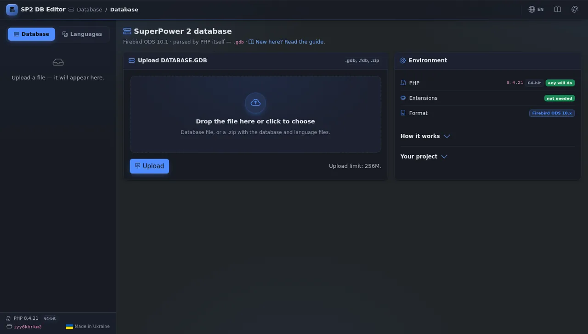
Ihre Dateien sind Kopien. Die Originale des Spiels werden nie angefasst — am Ende laden Sie die bearbeitete Kopie herunter.
Ihr Projekt und sein Link
Es gibt keine Anmeldung. In dem Moment, in dem Sie die Seite öffnen, bekommen Sie
einen kurzen Projektcode, und alles, was Sie hochladen, landet in einem eigenen Ordner.
Zwei Leute können in derselben Minute ihre eigene DATABASE.GDB hochladen,
ohne sich gegenseitig ins Gehege zu kommen.
Der Code steckt in einem Cookie, also denkt man im Normalfall nie an ihn. Er steht auch im Link: Bewahren Sie diesen Link auf, und das Projekt öffnet sich auf einem anderen Rechner, auf dem Handy oder nachdem die Cookies gelöscht wurden. Sie finden ihn unten in der linken Leiste und auf der Startseite unter Ihr Projekt.
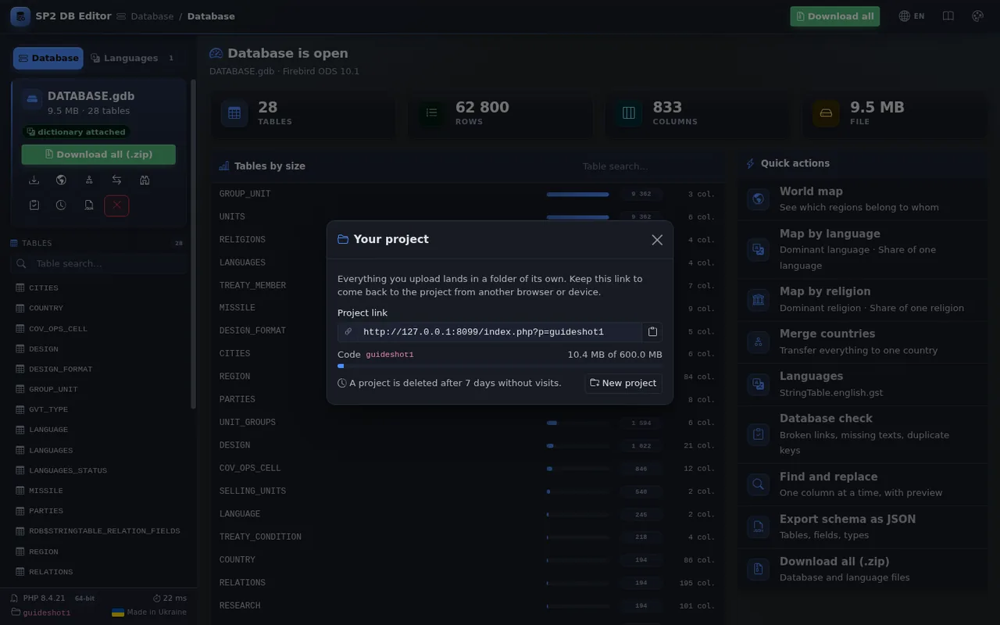
Ein Projekt wird sieben Tage nach dem letzten Besuch gelöscht. Schließen
nimmt eine Datei absichtlich aus dem Projekt heraus — eine Kopie bleibt ohnehin im
Ordner backups des Projekts.
Was der Datenbank-Reiter zeigt
Mit geöffneter Datenbank landen Sie auf einer Übersicht: wie viele Tabellen, Zeilen und Spalten es gibt, welche Tabellen die großen sind, und Schnellzugriffe auf alles, was sich zu tun lohnt.
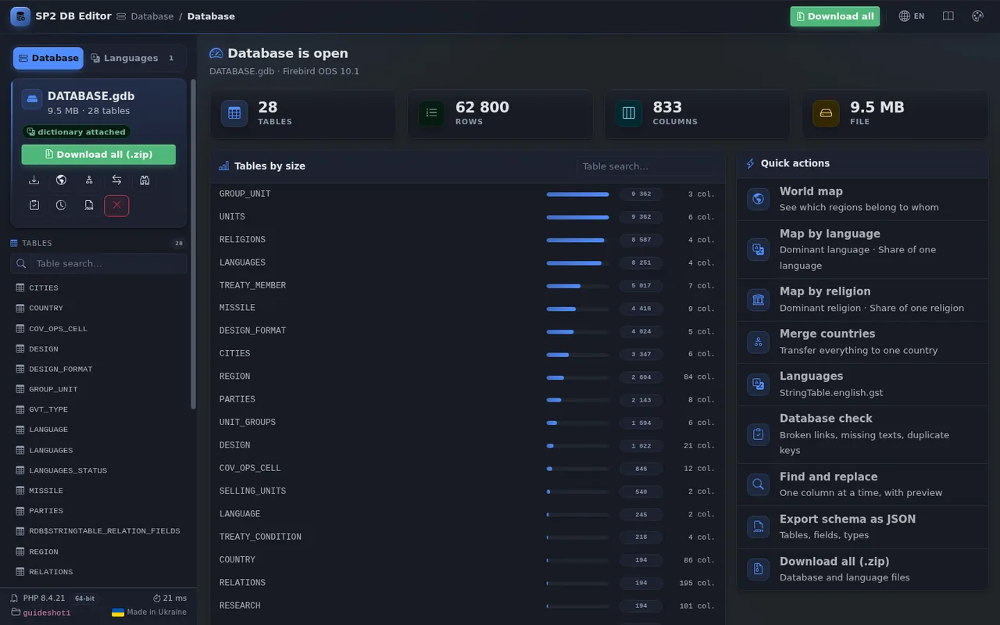
Eine Tabelle durchsehen
Wählen Sie links eine Tabelle. Ein Klick auf eine Spaltenüberschrift sortiert. Die Schaltfläche Filtern öffnet eine Reihe Felder unter den Überschriften: Tippen Sie in eins hinein, und nur die passenden Zeilen bleiben stehen.
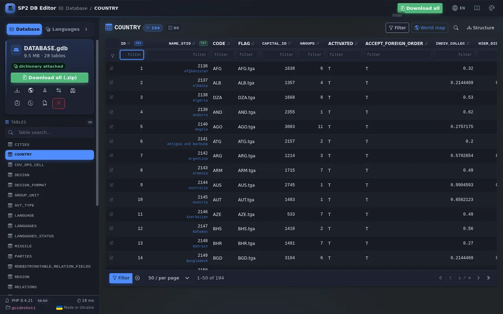
- IDX kennzeichnet eine Spalte, die Indizes benutzen. Die sind schreibgeschützt, und der nächste Abschnitt erklärt, warum.
- TXT kennzeichnet eine Spalte, die in die Sprachdatei zeigt. Der Name unter der Zahl kommt von dort.
- Große Tabellen werden auf Seiten verteilt; die Seitengröße wählen Sie unten selbst.
Eine Zeile bearbeiten
Der Stift am Anfang einer Zeile öffnet alle ihre Felder in einem Fenster. Es gibt ein
Suchfeld, denn manche Tabellen haben über zweihundert Spalten. Speichern
schreibt die Werte unmittelbar in die .gdb.
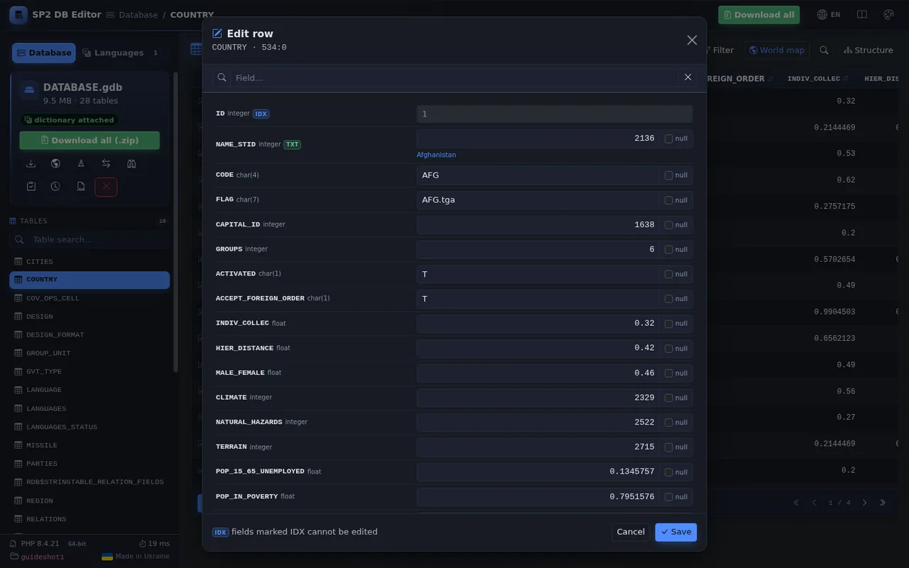
Felder, auf denen Indizes aufbauen — ID in fast jeder SP2-Tabelle — lassen sich nicht ändern. Ein Index ist ein eigener Schlüsselbaum in der Datei: Ändern Sie den Wert, ohne den Baum neu zu bauen, liest das Spiel die falschen Zeilen. Zeilen hinzufügen und löschen ist aus demselben Grund gesperrt.
Aufbau der Tabelle
Struktur listet die Spalten einer Tabelle mit ihren echten Firebird-Typen, Offsets und Domänen auf und weist auf die hin, die nach Verweisen auf andere Tabellen aussehen. Nützlich, wenn Sie herausfinden wollen, was eine Spalte eigentlich bedeutet.
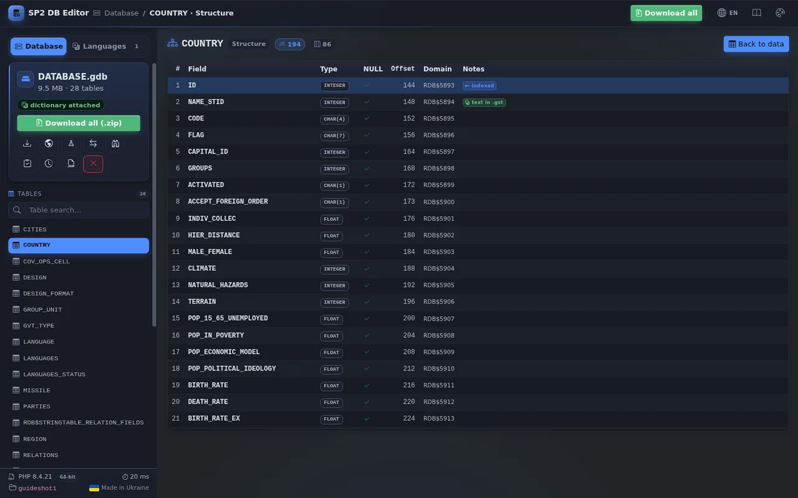
Dieselbe Liste gibt es als Datei: Schema-JSON in der linken Leiste übergibt Ihnen das ganze Schema für Ihre eigenen Skripte.
Die Weltkarte
In der Datenbank steckt keine Karte. SuperPower 2 hält 2 604 Regionen und 3 347 Städte fest, jede Stadt mit Breiten- und Längengrad — der Editor zeichnet eine Region also als den Boden, der ihren eigenen Städten näher ist als denen aller anderen, und beschneidet das Ergebnis dann an echten Küsten und Grenzen.
Darum sind die Formen nah dran, aber nicht exakt, und darum sagt die Karte das in der Zeile unter dem Bild auch offen. Ganz genau richtig ist, worauf es hier ankommt: welche Region wem gehört, direkt aus der Tabelle, die Sie gerade bearbeiten.
Wem was gehört
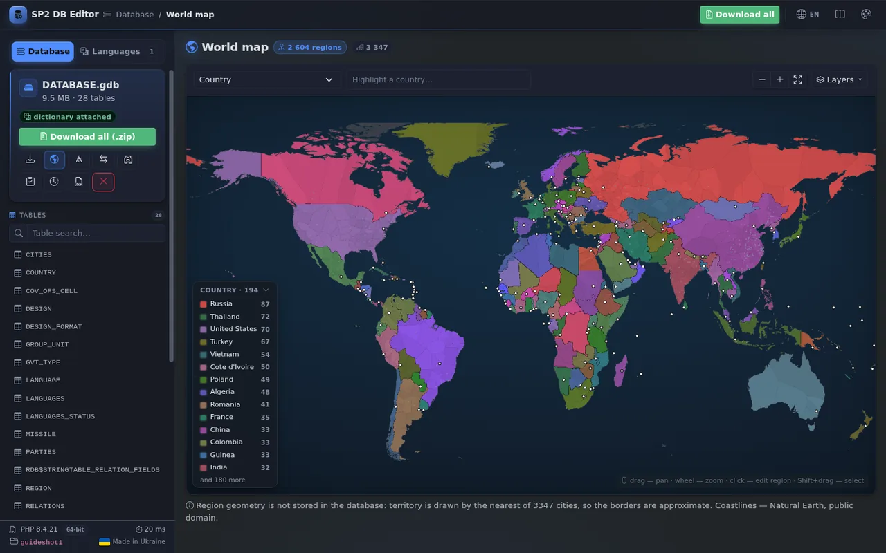
Fahren Sie über eine Region, und die Kurzinfo nennt Region, Besitzer und Hauptstadt. Ziehen verschiebt, das Mausrad zoomt, und das Feld neben der Ebenenliste hebt ein einzelnes Land hervor: So sehen Sie sein Gebiet auf einen Blick, samt der Stücke, die auf anderen Kontinenten liegen.
Sprache und Religion
Die Liste Einfärben nach links oben ändert, was die Farben bedeuten. Sprache und Religion
kommen aus den Tabellen LANGUAGES und RELIGIONS, die je
Region einen Anteil für jede Sprache und jedes Bekenntnis halten — die Karte malt das
mit dem größten Anteil.
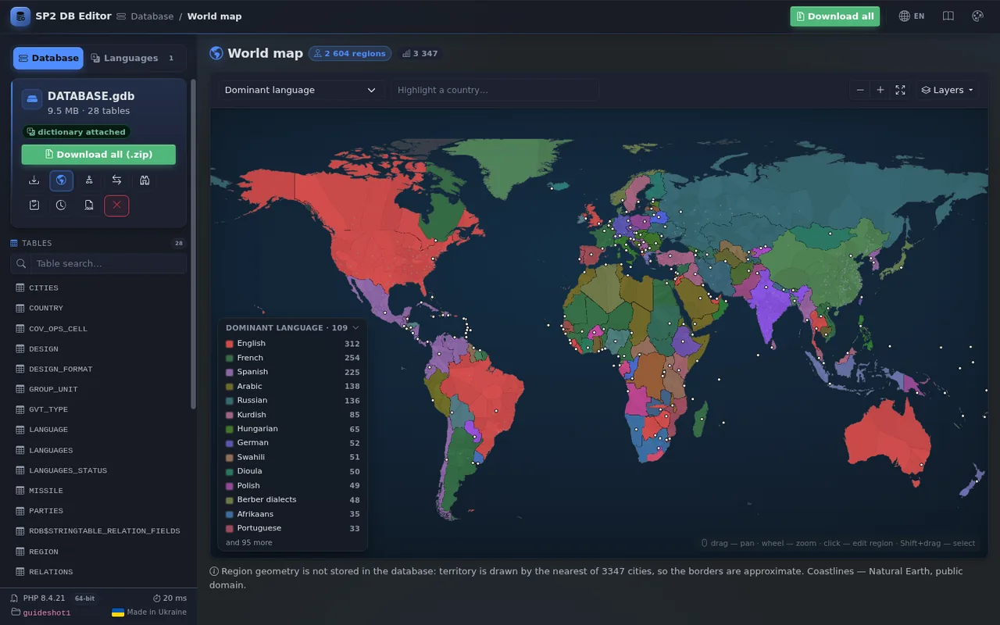
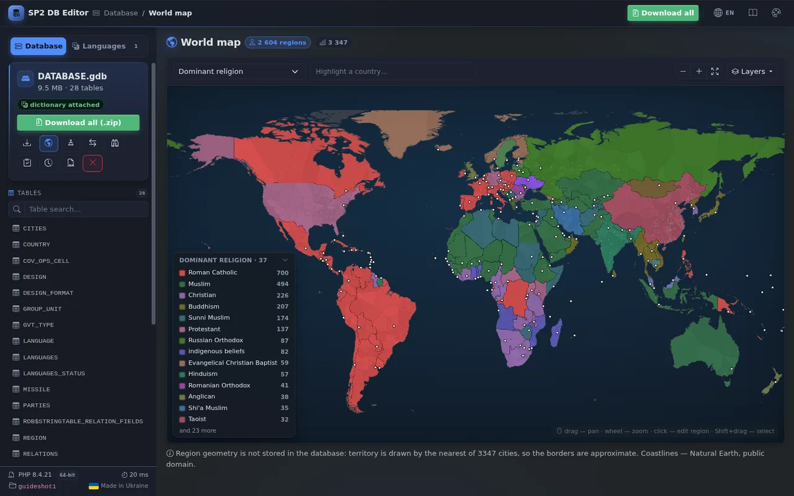
Zwei weitere Ebenen zeigen den Anteil einer ausgewählten Sprache oder eines Bekenntnisses als Verlauf — der schnellste Weg, die Regionen zu finden, die ein Mod vergessen hat.
Diese Ebenen zeigen die Daten des Spiels, nicht die wirkliche Welt — und die Daten des Spiels haben ihre Eigenheiten. Als vorherrschende Sprache Brasiliens kommt Englisch heraus, für die Ukraine Russisch. Genau das steht in DATABASE.GDB, und nun können Sie es sehen und richtigstellen.
Regierung und Zahlen
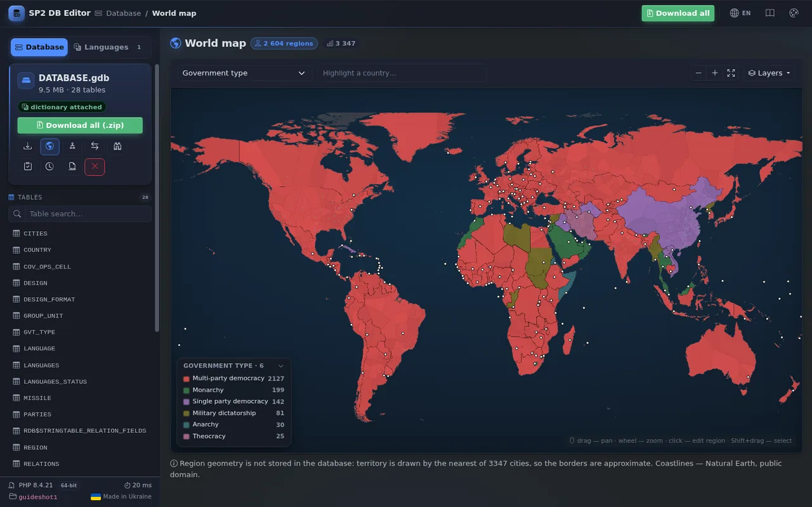
Zahlenebenen — Bevölkerung, Infrastruktur, Stand der Telekommunikation — verwenden einen einzigen Verlauf, mit dem kleinsten, dem mittleren und dem größten Wert in der Legende. Die Skala geht nach Rang und nicht nach Wert; sonst würden China und Indien alles andere in einen einzigen Ton drücken.
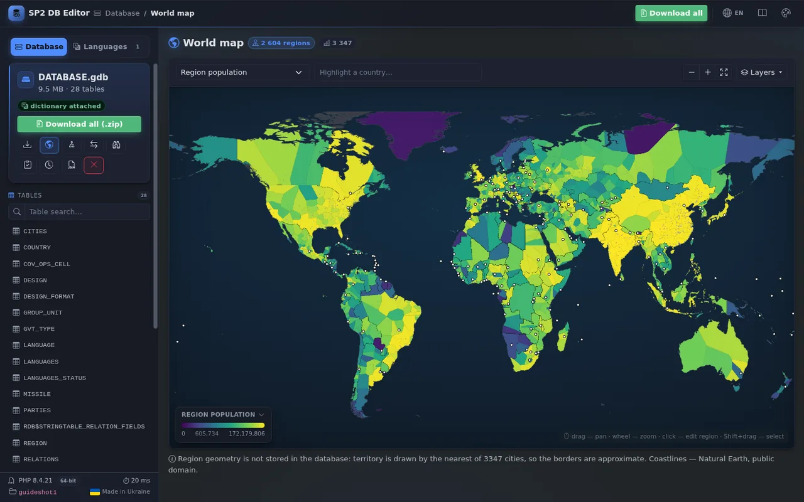
Beziehungen und Verträge
Nehmen Sie Beziehungen eines Landes und wählen Sie ein Land: Jedes andere
wird danach eingefärbt, wie es zu diesem steht — von feindlich über neutral bis
verbündet, aus der Tabelle RELATIONS.
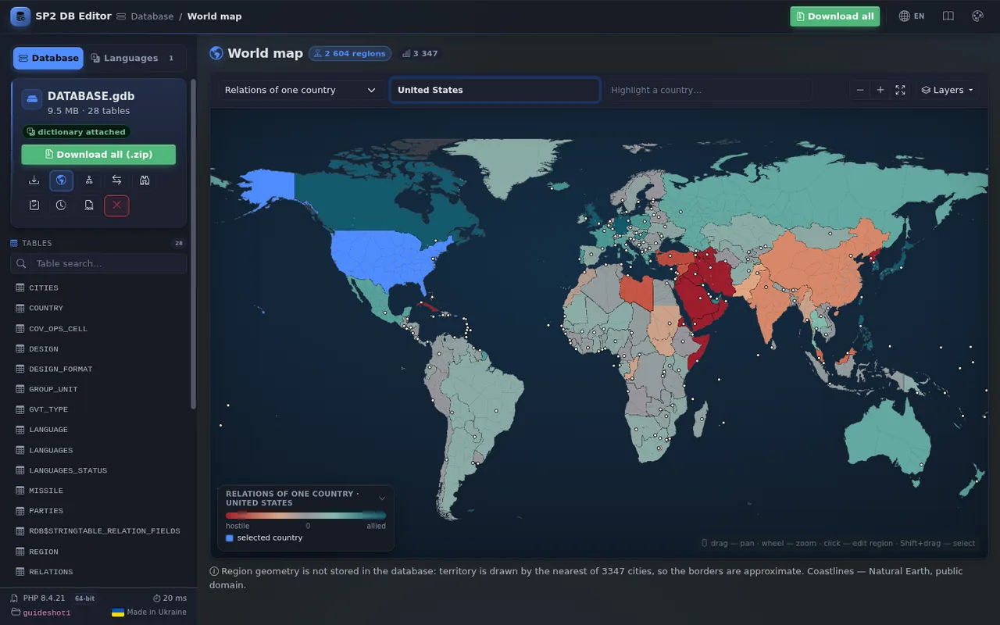
Vertragsmitglieder macht dasselbe: Wählen Sie einen
Vertrag aus TREATY, und seine Mitglieder leuchten auf.
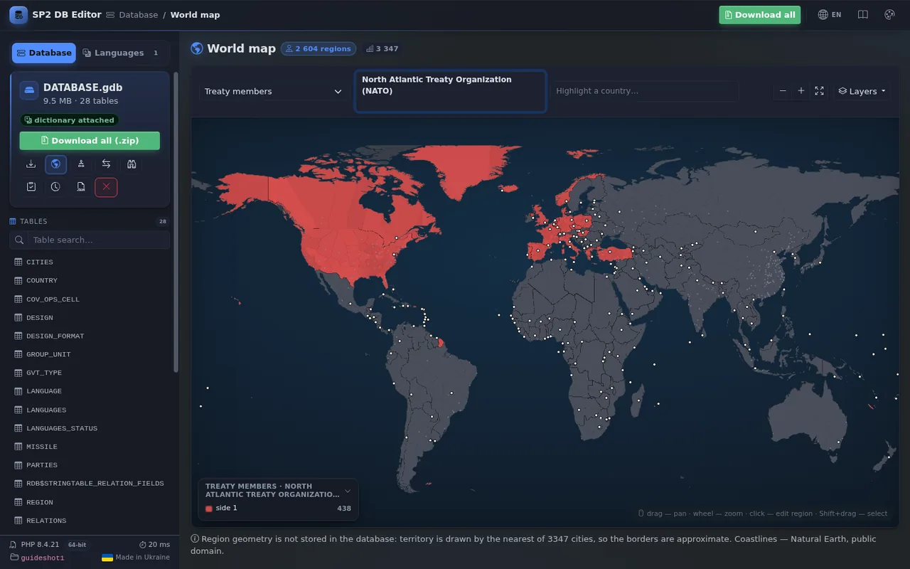
Armeen, Raketen, Stärke
Das Menü Ebenen rechts schaltet zwei Punktmengen an: die Einheiten aus
UNITS und die Raketen aus MISSILE, jede dort gezeichnet, wo
das Spiel sie stehen sieht.
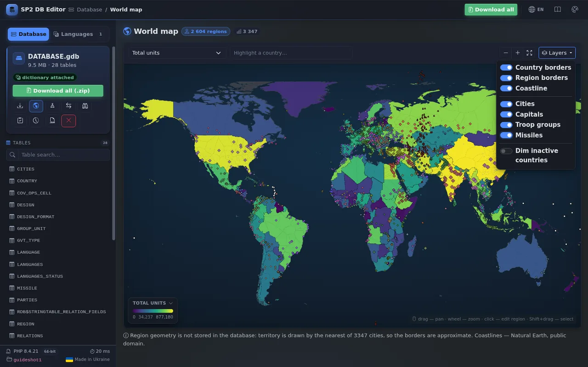
Einheiten gesamt zählt zusammen, was jedes Land wirklich besitzt, und schattiert die Länder nach der Summe: So sieht man auf einen Blick, welche Länder in dieser Datenbank die Schwergewichte sind.
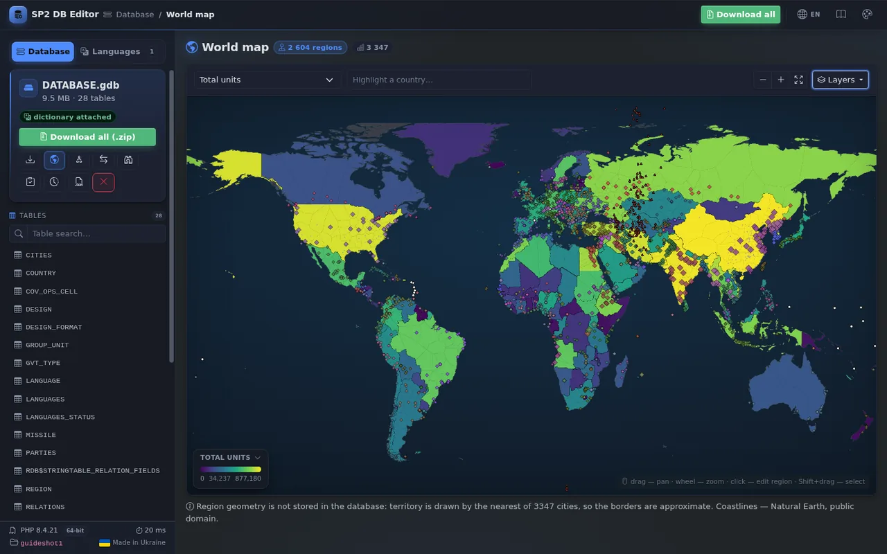
SuperPower 2 hat keine Tabelle mit Namen der Einheitentypen, also beschriftet der Editor einen Typ mit einem Entwurf, der ihn tatsächlich benutzt — eine echte Probe aus DESIGN, keine Vermutung.
Von der Karte aus bearbeiten
Die Karte ist kein Bild — sie ist ein zweiter Weg zu denselben Zeilen.
- Klicken Sie auf eine Region, und ihre Zeile aus
REGIONöffnet sich im gewohnten Bearbeitungsfenster. - Der Besitzerschalter in diesem Fenster gibt die Region auf der Stelle an ein anderes Land.
- Umschalt + Ziehen zieht einen Rahmen über mehrere Regionen und überträgt sie alle in einem Schritt an ein Land. Die Karte zeichnet sich sofort neu, ein Fehler fällt also gleich auf — und das Änderungsprotokoll nimmt ihn zurück.
Länder zusammenlegen
Das Zusammenlegen ist der schwere Brocken: Alles, was einem Land gehört — Regionen, Städte, Einheiten, Parteien, Verträge — geht an ein anderes über, und das Ausgangsland wird stillgelegt. Die Beziehungsmatrix bleibt unangetastet. So baut man einen Mod, in dem Jugoslawien nie zerfallen ist, oder einen, auf dessen Karte zwölf Länder statt hundertvierundneunzig stehen.
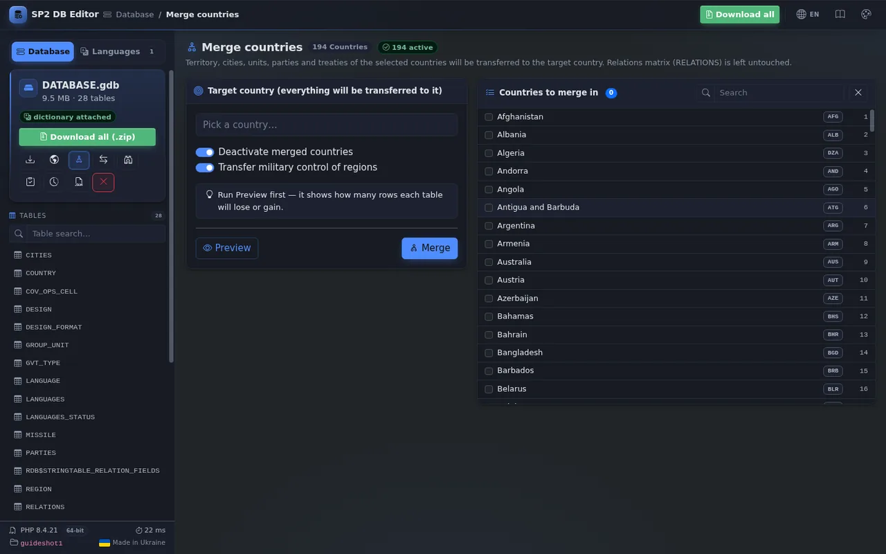
Nichts zieht um, ehe Sie bestätigen, und das ganze Zusammenlegen landet im Änderungsprotokoll als ein einziger Schritt, den Sie zurücknehmen können.
Suchen und ersetzen
Eine Spalte auf einmal, mit Vorschau. Wählen Sie Tabelle und Spalte, sagen Sie, was zutreffen soll — gleich, enthält, größer als, leer — und was stattdessen hineinkommt. Die Vorschau zeigt genau, welche Zeilen sich ändern würden und wie viele.
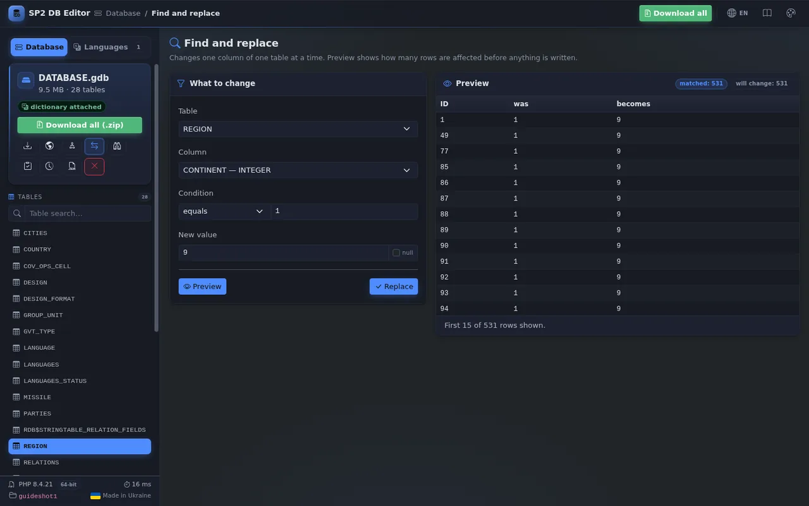
Die Datenbank prüfen
Die Prüfung sucht nur echte Fehler; geraten wird nichts:
- Verweise, die auf Zeilen zeigen, die es nicht gibt;
- Textzeiger, die in der angehängten Sprachdatei fehlen;
- aktive Länder ganz ohne Regionen;
- Hauptstädte, die in einem anderen Land liegen;
- doppelte Schlüssel und Regionen ohne eine einzige Stadt.
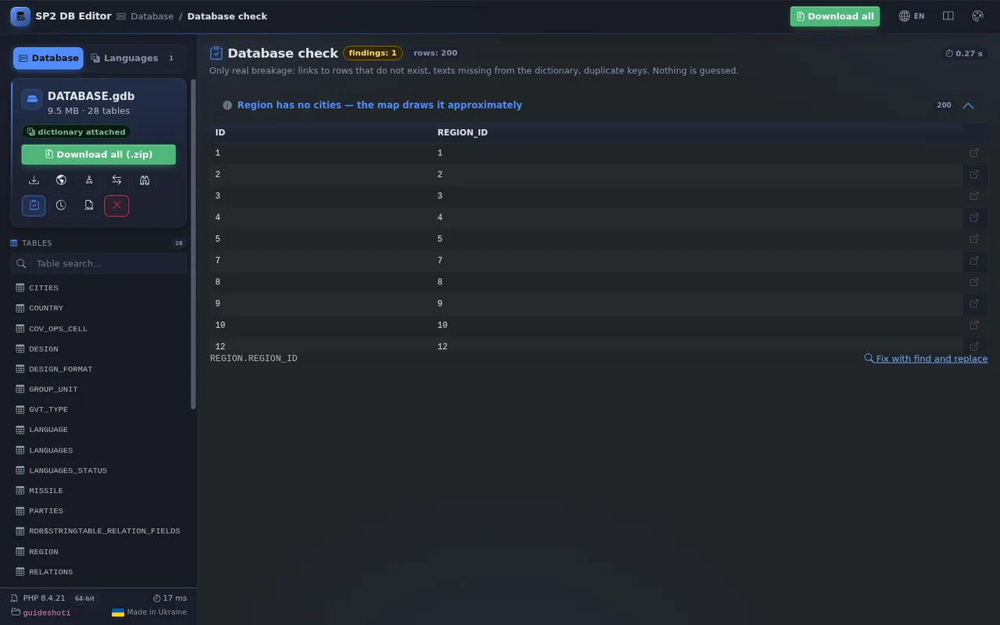
Sie lohnt sich nach einem Zusammenlegen oder einem großen Ersetzen — und noch einmal, bevor Sie die Datei zurück ins Spiel nehmen.
Globale Suche
Ein Feld, alle Tabellen, dazu die Sprachdatei. Tippen Sie einen Namen, und Sie bekommen die Zeilen, die ihn erwähnen, wo immer sie auch stehen.
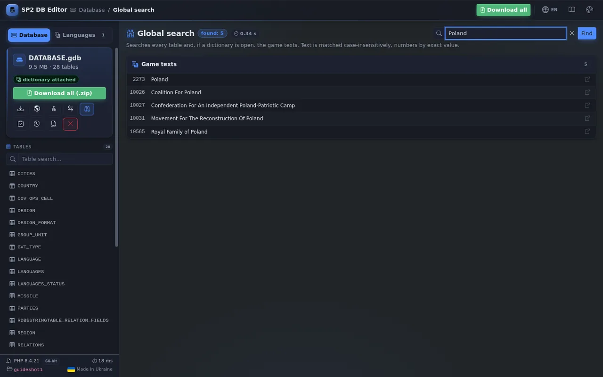
Änderungsprotokoll und Rückgängig
Jede Änderung dieser Sitzung — eine Zeile, ein Ersetzen, ein Zusammenlegen, eine Übertragung auf der Karte — wird mit den Werten festgehalten, die sie verdrängt hat. Rückgängig stellt die vorigen Werte wieder her.
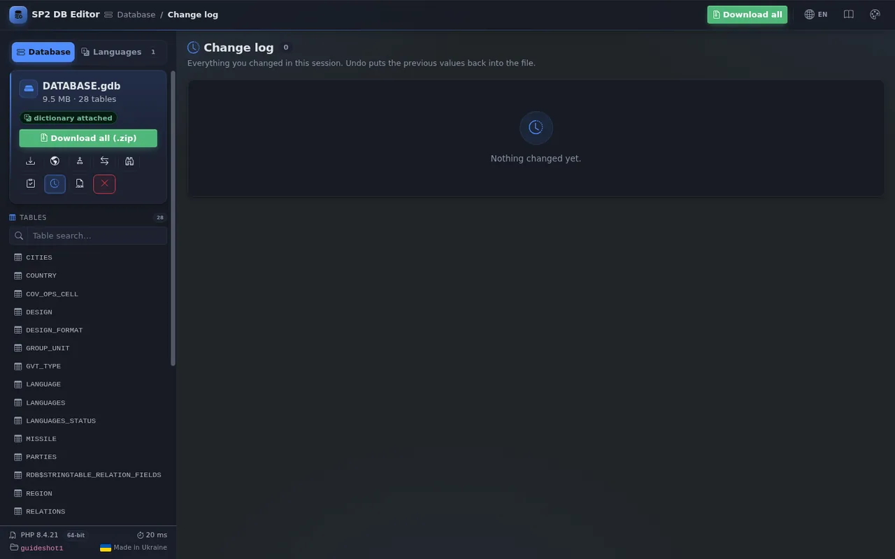
Außerdem wird vor jeder einzelnen Änderung eine Kopie der Datei in den Ordner
backups des Projekts gelegt. Das Protokoll deckt die Sitzung ab; die Kopien
bleiben, solange das Projekt bleibt.
Sprachdateien (.gst)
Eine .gst ist ein Index plus ein Block UTF-16-Text — dort wohnt in
Wahrheit jeder Name, den das Spiel Ihnen zeigt. Der Reiter Sprachen listet sie alle mit
Suche auf, und eine Zeile wird an Ort und Stelle bearbeitet.
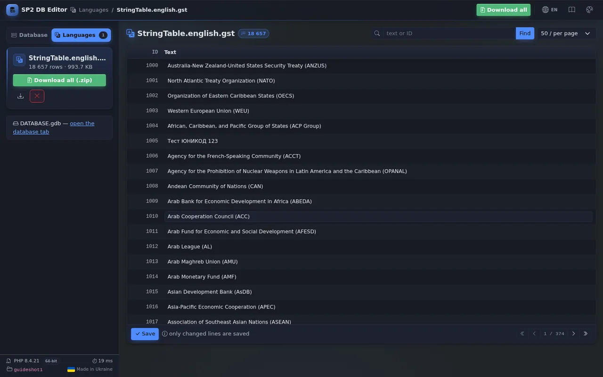
Mehrere Sprachdateien können gleichzeitig offen sein; die, die Sie wählen, benutzen die Tabellen der Datenbank, wenn sie die Namen unter die Zahlen schreiben. Ein Land für das ganze Spiel umzubenennen ist hier eine einzige Zeile — keine Änderung in der Datenbank.
Darstellung
Zehn Themen, Ihre eigene Akzent- und Textfarbe, zehn Schriften, eine Größe und ein Schalter für die Dichte. Alles wird im Browser angewandt und bleibt dort, kostet also nichts und begleitet Sie durch den ganzen Editor.
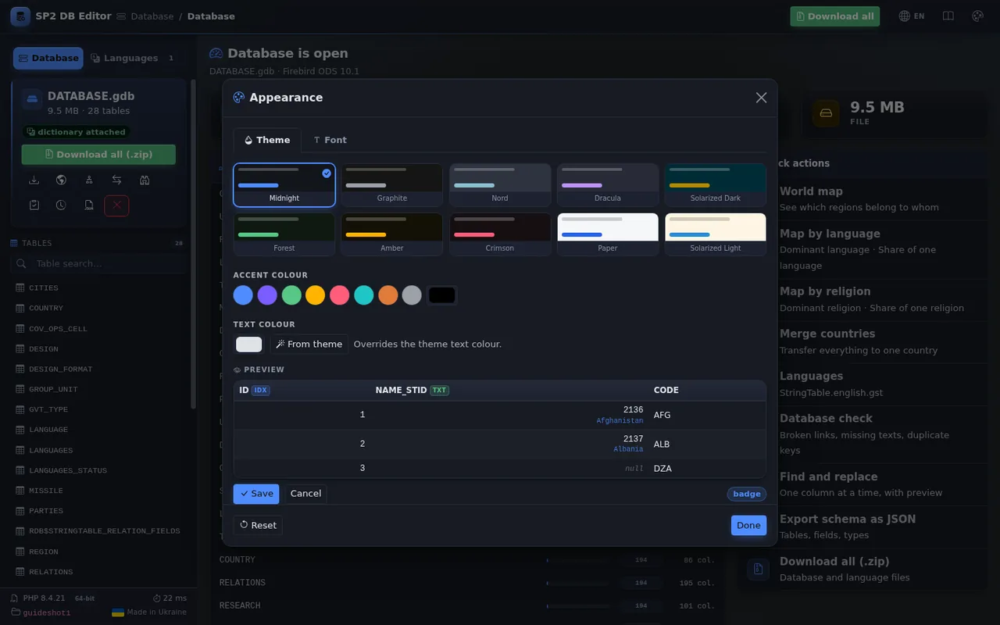
Auf dem Handy
Das Layout klappt zusammen: Die Tabellenliste fährt von der Seite herein, die Werkzeugleiste bricht um, und die Karte nimmt die volle Breite, mit Schieben per Finger und Zoom mit zwei Fingern.
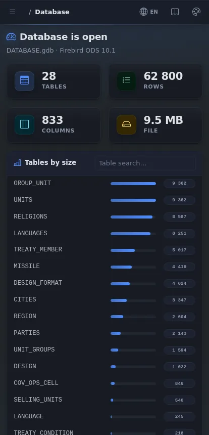
Ihre Arbeit zurückholen
Alles herunterladen (.zip) oben packt die Datenbank und jede offene
Sprachdatei in ein Archiv — mit genau den Namen, die das Spiel erwartet, bereit, wieder
nach Extras\ oder in den Ordner Ihres Mods gelegt zu werden. Einzelne
Dateien können Sie für sich aus der linken Leiste herunterladen.
Der Editor schreibt von sich aus nie in Ihr Spiel.
Was er nicht tun wird
- Indizierte Felder bleiben schreibgeschützt. Eine
IDzu ändern, ohne den Indexbaum neu zu bauen, würde die Datei unbemerkt beschädigen — und ein unbemerkter Schaden in einer Datenbank, die das Spiel jede Runde liest, ist die schlimmste Sorte. - Zeilen werden nicht hinzugefügt und nicht gelöscht — aus demselben Grund.
- BLOB-Spalten erscheinen als
[BLOB]und bleiben unangetastet. - Die Ordner des Servers selbst sind außer Reichweite. Dateien direkt aus einem Spielordner zu öffnen ist ausgeschaltet, außer Sie lassen den Editor zu Hause laufen und schalten es selbst ein.
Alles andere steht Ihnen offen. Viel Freude damit.